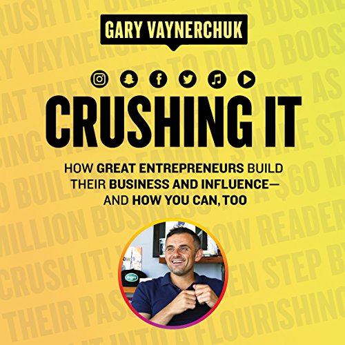

Library › Business & Startups
Crushing It! — Summary & Key Lessons

How great entrepreneurs build their business and influence — and how you can, too. Personal brand is the new startup capital.
📖 OPEN THE FULL INTERACTIVE BREAKDOWN →🌐 Read it in Hindi, Hinglish, Gujarati, Tamil & 22 more languages — free, with audio.
💡 The Big Idea
The sequel to Crush It! arrives with receipts: dozens of readers who took the 2009 playbook and built real businesses — and updated doctrine for the platform age. GaryVee's pillars: personal brand is the ultimate career insurance (companies die, algorithms shift; a trusted name compounds forever); the formula is intent (give value, don't extract), authenticity (the internet smells fake at scale), passion (you'll need to work too long for anything you don't love), and patience (years of unrewarded output BEFORE the compounding shows — 'macro patience, micro speed'); document rather than create (your process IS content — journey beats polish); and master the pillar-plus-repurpose model: one deep platform you dominate, atomized across every other channel. The subtext for every excuse-maker: the tools are free, the attention is purchasable with effort, and 'no time' usually means 'wrong evenings.'
🧠 The 6 Key Lessons
Lesson 1: Personal Brand: The Career Insurance Nobody Can Cancel
Chapters 1–2: The Path Is All Yours / What (Still) Matters
GaryVee's core asset class: a PERSONAL BRAND — the trust, attention, and reputation attached to your name — outperforms every traditional credential because it's portable (survives layoffs, industry shifts, company deaths), compounding (every piece of value published keeps working), and increasingly the deciding filter for opportunities (clients, employers, and partners all Google before they call). The eight essentials he re-validates from the first book: intent (the community can smell whether you're giving or extracting — lead with disproportionate value), authenticity (playing a character is unsustainable at daily-content scale; your actual personality is the only renewable resource), passion (the grind is too long for pretenders), patience, work ethic, attention (to platform shifts), content, and community. The reframe for employees: this isn't just for founders — the accountant, teacher, and plumber with a documented public craft each out-earn and out-option their invisible identical twins.
📖 Example: The book's structure is its evidence: chapters are built around Crush It! readers who executed — the deaf vlogger who built an audience captioning her world, the family man who turned $600 and a sports-card obsession into a seven-figure operation, the… Read the full example →
⚡ Do this: Google yourself — that's your current brand. Then define the one-line positioning you want the internet to learn ('the ___ who ___'), and commit to the eight-essentials audit: score yourself 1–10 on intent, authenticity, passion, and patience; your lowest score is the leak to fix before any tactic matters.
Lesson 2: Document, Don't Create
Chapter 4: Creating Your Pillar Content
The paralysis-killer: most people produce nothing because they think content means CREATING — polished, expert, cinematic. GaryVee's inversion: DOCUMENT — your actual process, learning, wins, and stumbles, shared as they happen ('document your journey versus creating an image of yourself'). The logic stack: documenting is sustainable (no creative well to run dry — your life IS the material), authentic by construction (you're reporting, not performing), and paradoxically more magnetic: audiences bond with journeys in progress far harder than with arrived experts (the beginner documenting year one recruits companions; the guru broadcasting from the summit recruits only critics). The practical unlock: 'starting out' stops being a disqualification and becomes the CONTENT — 'I'm figuring out X, here's what happened this week' is a show anyone can run from day zero, and the archive becomes proof-of-work no résumé can match.
📖 Example: Gary's own catalog is the demonstration: thousands of pieces of content that are substantially a camera pointed at his actual workday — meetings, calls, hallway rants — an operation any solo player can copy at phone-and-lapel-mic scale. The book's reader… Read the full example →
⚡ Do this: Kill the polish requirement: this week, publish three DOCUMENTS (not creations) — what you worked on, what broke, what you learned, shot on your phone or typed in ten minutes. The bar is honesty, not production value. Repeat weekly for six months before evaluating.
Lesson 3: Pillar + Atomize: The Platform Playbook
Chapters 5–12: The Platforms
The distribution architecture: choose ONE PILLAR platform — matched to your native format (writer → blog/X, talker → podcast, performer → video, visual → Instagram) — and go disproportionately deep: learn its culture, post daily, engage relentlessly (the '$1.80 strategy': leave your two cents on the top posts in your niche, ninety times a day — attention is farmed in other people's comment sections before it's harvested in your own). Then ATOMIZE: every pillar piece becomes native micro-content everywhere else — the podcast yields quote cards, clips, threads, and stories; one hour of pillar production feeding a week of omnipresence. Platform rules he pounds: respect each platform's native culture (cross-posting identical content everywhere is 'wearing a tuxedo to the beach'); collaborate up and sideways (the fastest audience transfer is borrowing someone else's); and watch for underpriced attention — every platform has a golden window where organic reach is cheap (he built on each wave: YouTube '06, Twitter '07, and so on) — being early to the next one is worth years of grinding on a saturated one.
📖 Example: The atomization model is Gary's own machine, diagrammed in the book: one keynote (pillar) professionally deconstructed into dozens of platform-native fragments — the model his team ran to make one man omnipresent. The underpriced-attention exhibit is his… Read the full example →
⚡ Do this: Declare your pillar (match format to your natural mode) and your daily minimum. Install the $1.80 habit: 15 minutes daily of genuine value-comments in your niche's top posts. And chop this week's pillar piece into three native fragments for two other platforms — the repurposing muscle builds fast.
Lesson 4: Macro Patience, Micro Speed — and the 7 PM to 2 AM Rule
Chapters 3, 13: Stop Making Excuses / Conclusion
The tempo doctrine that separates builders from quitters: MACRO PATIENCE (the brand payoff arrives in years — expect 12–24 months of near-zero traction as the ENTRY FEE, not a verdict; the compounding curve is flat before it's vertical, and everyone quits on the flat part) paired with MICRO SPEED (within each day, ferocious urgency — ship today, respond now, iterate this week; slow years built from fast days). The excuse demolition: 'no time' gets the 7-PM-TO-2-AM audit — the after-work hours currently spent on shows and scrolling are, for anyone employed, the entire startup capital required ('you want this? Netflix is the cost'); 'too late / too saturated' gets the depth answer (every platform is saturated with mediocrity and starving for genuine value); 'no money' gets the free-tools inventory (a phone is a studio). The closing covenant: passion sets direction, patience holds the line, work fills the hours — and happiness, not vanity metrics, is the actual KPI: 'crushing it' is defined as building a life around work you love, at whatever scale that turns out to be.
📖 Example: Gary's own patience receipts: years of daily Wine Library episodes to double-digit viewers before the inflection — 'I was making episode 300 for 40 people' — the flat curve walked in public. The 7-to-2 exhibit is his standing challenge to callers claiming no… Read the full example →
⚡ Do this: Sign the two-tempo contract: write your 18-month no-verdict commitment (no traction judgments before then), and this week's micro-speed quota (ships, posts, replies — due Friday). Run the 7-to-2 audit tonight: log your evening hours for three days, and reassign the biggest leak to the pillar.
Lesson 5: The Law of Amplification: Passion + Story = Reach
Part 3: The Strategy
Gary Vaynerchuk's formula for the modern platform era: amplify your authentic story relentlessly, and the platforms (Instagram, YouTube, podcasts, newsletters) will reward you. The 'law of amplification' means the best content isn't the most polished — it's the most authentic, published consistently. Your passion gives the content energy; your story gives it uniqueness; volume gives it reach. People connect with humans, not brands — so stop hiding behind corporate polish and start showing the face, the struggle, the behind-the-scenes. In a feed full of noise, the person who is genuinely themselves wins attention by default.
📖 Example: Gary Vee built his entire media empire by documenting his wine business's daily reality — tastings, failures, opinions — for years before anyone paid attention. When the audience arrived, they arrived for the person they'd been watching all along. Read the full example →
⚡ Do this: Record one 60-second video this week about something you genuinely care about in your work — no editing, no script, just you. Post it.
Lesson 6: The 7 PM to 2 AM Rule: Hustle on the Side Until It Becomes the Main
Part 4: The Execution
Gary Vee's famous rule for those with day jobs: your side hustle gets the 7 PM to 2 AM window — the hours most people spend on Netflix. He built Wine Library's content empire while running the store, working nights and weekends until the side project outgrew the day job. The rule isn't about burning out; it's about accepting that building something new requires a season of sacrifice. The math is simple: 20 focused hours a week on your passion project compounds faster than 40 distracted ones. Your 7-to-2 is the investment that buys your freedom from the 9-to-5.
📖 Example: Gary Vee points to countless creators who built million-view channels from their bedrooms after work — the podcast recorded at 10pm, the content scheduled during lunch breaks. The common factor was never talent; it was the willingness to spend the evening… Read the full example →
⚡ Do this: Claim your 7-to-2 window this week: 3 evenings × 90 focused minutes on your project. Track the hours and watch them compound.
✅ 5-Step Action Plan
- Google yourself; write the one-line positioning; audit the eight essentials.
- Publish three documents weekly — honesty over polish, for six months.
- Declare the pillar, run the $1.80 habit, atomize weekly.
- Sign the 18-month macro-patience contract with Friday micro-quotas.
- Reclaim the 7-PM-to-2-AM hours; they're the startup capital.
⚠️ When This Doesn't Work
Gary Vee's 'build your brand on platforms' advice has a platform risk he glosses over: you are renting the land. Koo — India's 'homegrown Twitter' — crushed it in every metric: millions of downloads, government support, celebrity endorsements, and then the platform's users simply stopped coming back, and the brand that was 'crushing it' evaporated with them. Building on someone else's platform is building on rented land; the lease can end at any time.
💀 The Graveyard Proves It
🐦 Koo — India's Twitter Died Waiting for Twitter to Die. Burn: $60M+ raised; sold for scrap value. Read the full case study →
💬 Best Quotes from Crushing It!
- “Skills are cheap. Passion is priceless.”
- “Document, don't create.”
- “Macro patience, micro speed.”
Interactive version: mark lessons as read, listen in your language, share quote cards.